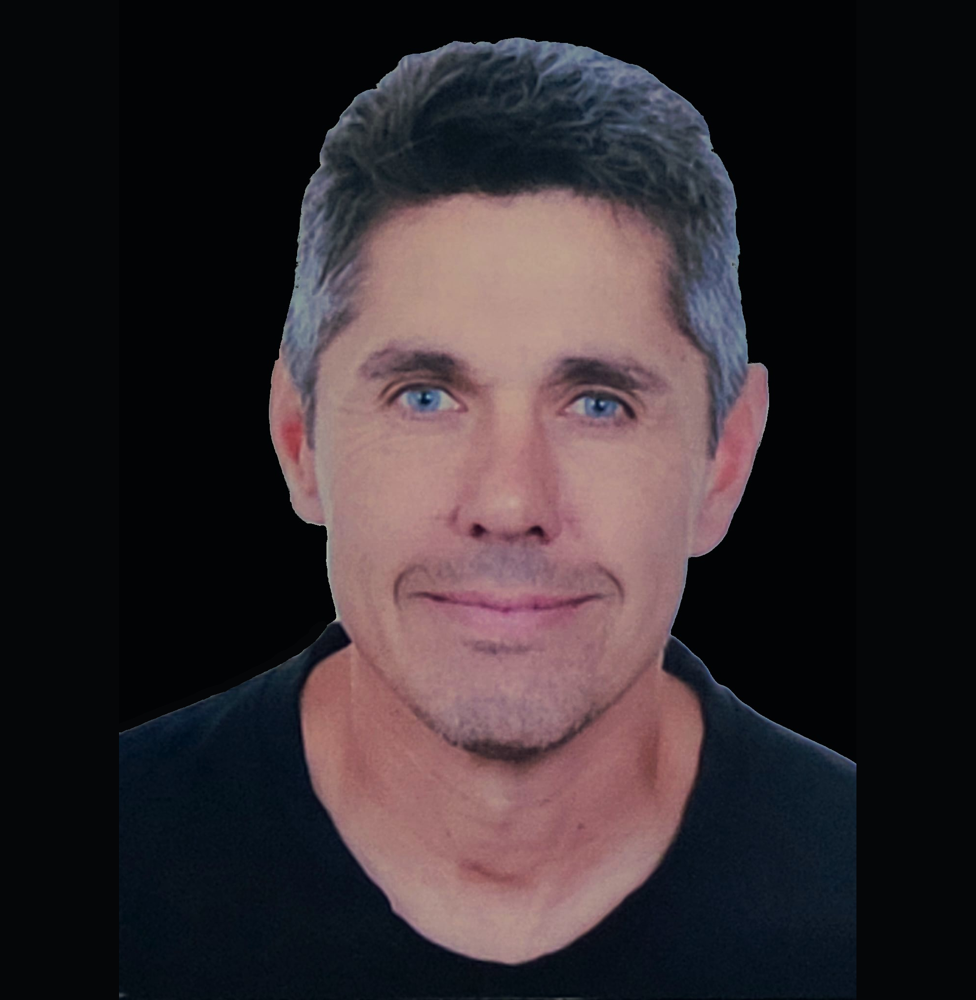
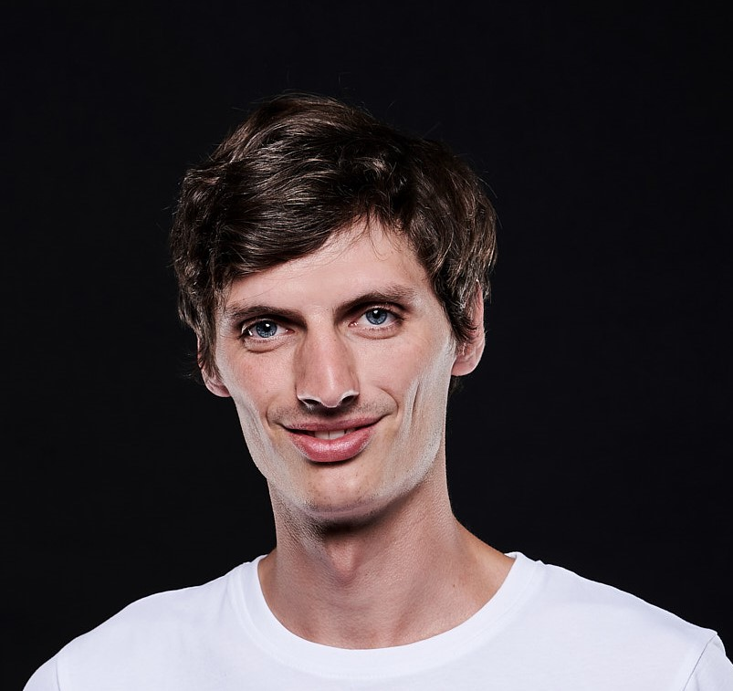

Aktivní Jablonec je sdružení nezávislých kandidátů. Do voleb jdeme bez vazby na politickou stranu — spojuje nás jen konkrétní program a chuť pro město pracovat.
„Chceme město s novou energií — kde mají mladé rodiny místo k bydlení, senioři péči, spolky podporu a úřad otevřené dveře pro každého."
Město tvoří lidé. Naší snahou je vytvořit podmínky, aby mladí z Jablonce nad Jizerou neodcházeli a všichni se zde cítili rovnocenní. Informovanost je základem k oboustranné slušné komunikaci.
Investice do dětí a spolkového života jsou nejlepší investicí do budoucnosti našeho města.
Péče o veřejný prostor a důstojný život pro starší spoluobčany.
Nechceme zatěžovat městský rozpočet více, než je nutné. Budeme investovat chytrým využitím všech zdrojů.
Patnáct nezávislých kandidátů bez vazby na politickou stranu nebo hnutí.
učitelka anglického jazyka
OSVČ
řidič — záchranář ZZSLK

strojník lanové dráhy
řidič
učitel ZŠ
údržbář
OSVČ — vedoucí prodeje

sportovní ředitel
učitelka ZŠ
OSVČ
řidič ve firmě EKO Jilemnice
administrativní pracovnice
zdravotnický záchranář
nákup/logistika přepravy
Všichni kandidáti jsou bez politické příslušnosti — kandidují za sdružení nezávislých kandidátů Aktivní Jablonec.
Ať už chcete kampani pomoct, nebo si jen chcete promluvit o tom, co Jablonec nad Jizerou potřebuje — ozvěte se nám.